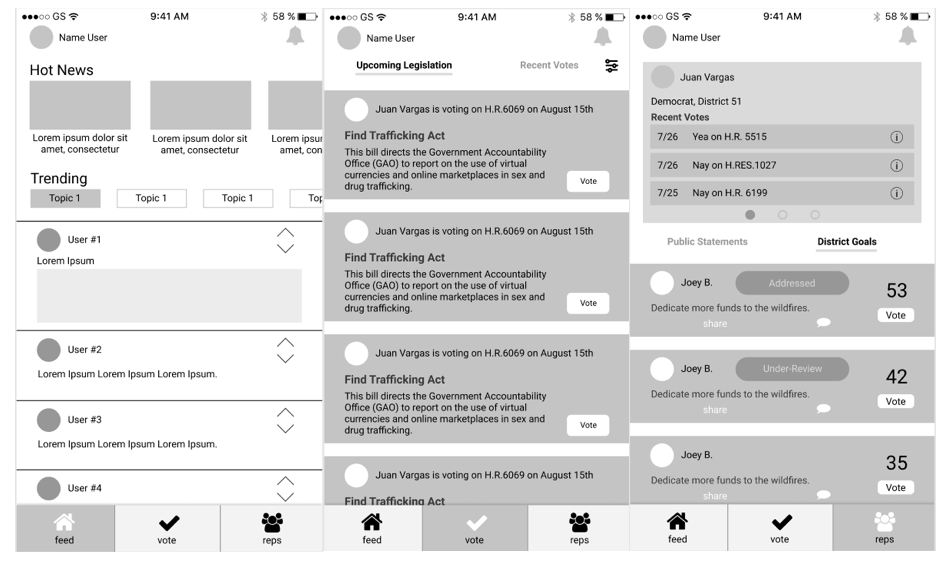

Overview
I wanted to design an app that provides individuals a streamlined way to contact their representatives while providing representatives a system that aggregates constituent input. In return, this app would create more responsive representatives by providing a way for the elected official to view all constituent data on topics ranging from the environment to district issues that would otherwise be spread on various social media platforms.
Challenge
The challenge was to create an app that provided value on both sides, as the app requires buy in from the representative and their constituency in order for it to be marketable for either side. In the current system, representatives receive phone calls or emails with constituent comments and it is up to the discretion of the office on how the information is stored and interpreted. It was important to establish the metrics and user info political offices found important and a way to extract it from the user base.
The Market
After establishing a general idea of the product, I conducted competitive analyses to see what similar products existed the space and gauge the success of specific features. It was helpful to see what features were consistent across the apps or were implimented in similar ways.
After the inital trial, I went through the app store and read reviews for each competitor. Across all apps users enjoyed the ability to track their representatives and digestible descriptions of upcoming bills coming to a vote. All of the apps reviewed also had users send in emails or call their representative as a call to action. On the other hand, each app approached the social aspect of politics differently. Some apps allowed their users to make posts into the general feed but blocked users from interacting by commenting, while others dismissed the ability of users to interact.
User Research
There are two major user groups for this product: the constituent side and the representative side. In order for the representative to engage and draw in subsequent constituents, we established we had to design the app to produce real, useable data for the representative. By providing data on the needs of constituents, representatives would be better able to tailor their message during campaign season while continuing to be responsive during their incumbancy.
Rapid Paper Prototypes
While creating the initial paper prototypes I sketched out all the features I imaged the app would include: a user feed, a news feed, and a representative tracker. Individuals would be able to login and be directly sent into the constituent feed, where there would engage in political discussions. The representative tracker would allow them to see how often their representative aligned with them while the news portion would help them get educated on political matter.
User Feedback
I conducted user testing to guage the usability of the paper prototypes, drawing new prototypes as the conversion evolved. The main feedback I got was:
- Users were unsure of how their information was stored and if signing up created an account that mirrorred a social media account (saving information in a publicly viewed personal page)
- Interactions on the app were not allowing users to derive the information they found relevant. Users wanted a direct communication point with their representative and digestible political news
- The representative feature should be the focal point of the app. Users were interested in knowing the political affiliation, recent votes, and causes the representative aligned with.
Digital Prototypes
After multiple sessions of rapid prototyping, the main feedback was used to establish a digital prototype that attempted to mirror the experience the user wanted. The first step was to make the politics more digestable by providing quick snapshots of news and bills representatives we voting on. The second was to integrate a feature that allowed a two-way responsive conversation between representatives and their constituency.
User Feedback
Users were happy with the ability to quickly and fluidly be updated on their representative through the vote feature. Users also engaged with the representative tracker feature, which allows users to input district issues and a have a live person on the backend declare the feasibility of their request.
Pushback came from the social aspect of the app. People were skeptical of its ability to promote civil discourse and remain neutral in the political debates, naturally the app would establish a left or right leaning the more individuals it attracts. Users were also still confused on what kind of information was going to be discussed and posted through the feed.
Next Steps
The next phase of the projects requires a range of iterations and user testing. Luckily, our team is already in the process of redesigning the current wireframes based on user feedback.